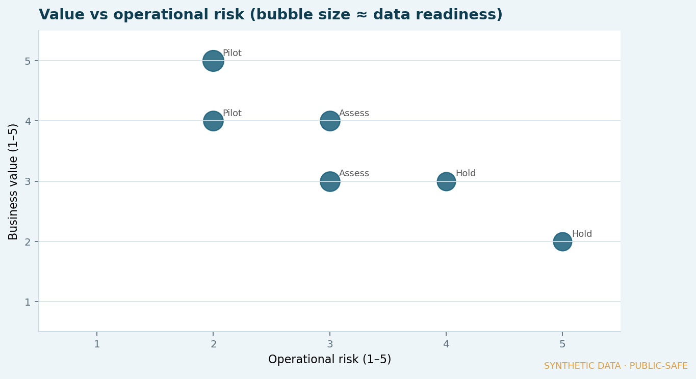
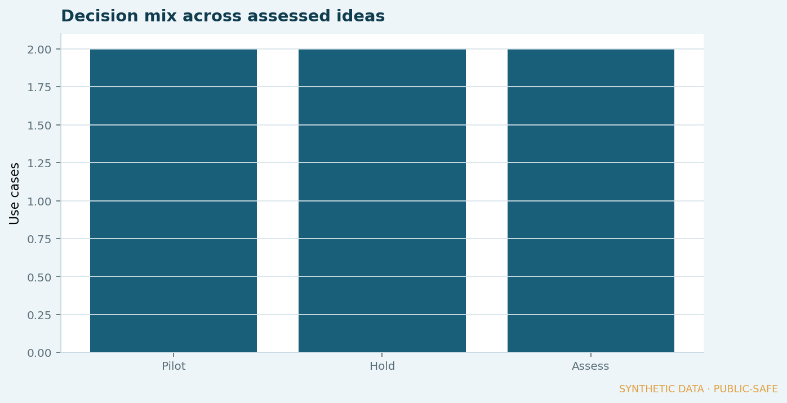

Framework · Evidence published
Applied AI opportunity assessment
A simple shared frame for forecasting and automation ideas: score value, data readiness, complexity and operational risk — then decide Pilot, Assess or Hold. Synthetic examples only; no client AI systems.

Business context
Teams generate more AI ideas than they can safely deliver. Without a shared assessment language, effort drifts toward novelty instead of decisions that improve finance or operations.
The problem
Ideas arrive without a consistent way to judge business value, data readiness and operational risk — so weak cases consume the same attention as strong ones.
My role
Design a lightweight assessment frame and apply it to synthetic finance/ERP-adjacent ideas so the method can be shown publicly.
Approach
- Score each idea 1–5 on value, data readiness, complexity and operational risk.
- Compute a simple priority score that rewards value and readiness, penalises complexity and risk.
- Map to Pilot / Assess / Hold decisions for stakeholder conversations.
- Keep governance explicit: automation only where the frame justifies it.
Controls
- Shared criteria before tooling choices
- Hold is a valid outcome (not a failure)
- Examples are synthetic — not deployed client models
Result
Published scoring board and visuals for six synthetic use cases.


Source table:
What I am learning
How to keep applied AI conversations tied to reporting and process decisions — so “can we automate?” comes after “should we, with this data and risk?”
Public-disclosure note
Use cases and scores are invented for portfolio evidence. This page does not describe employer AI systems, models or outcomes.